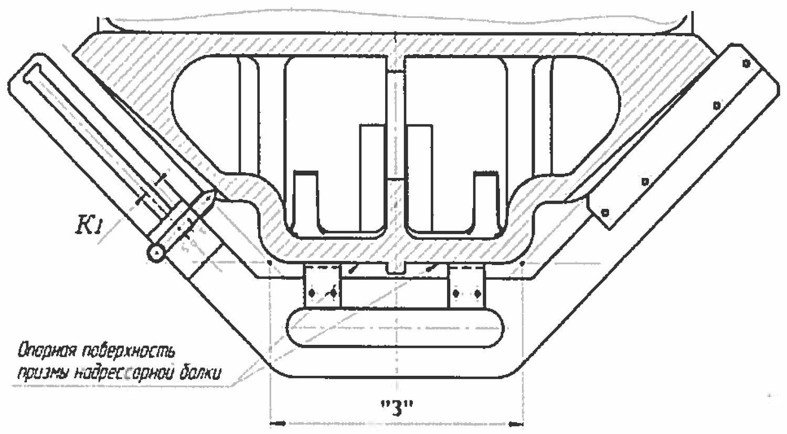

Nadressor balkasi: «З» tayanch yuza uzunligi
«З» o'lchamini shablon НП bilan aniqlash, 1,41 koeffitsienti, 2-jadval va model bo'yicha me'yorlar.
«З» nima va nima uchun muhim
«З» — nadressor balkasi prizmasining tayanch yuzasi uzunligi, ya'ni ikkita qiya yuza orasidagi pastki asos. Qiya yuzalar yeyilgan sari ular bir-biridan uzoqlashadi va «З» kattalashadi... aslida aksincha: yeyilish natijasida qiya yuzalar ichkariga kirib boradi va tayanch yuza qisqaradi.
«З» qisqarsa, friksion pona pastroqqa tushadi, prujina boshqacha ishlaydi va so'ndirish xarakteristikasi buziladi. Shuning uchun «З» — nadressor balkasining eng muhim o'lchamlaridan biri.

O'lchash tartibi
- Qiya yuzalarni ko'zdan kechirib, eng katta yeyilish joylarini aniqlang.
- Shablonni oyoqchalari bilan tayanch yuzaga o'rnatib, nakladka bilan bir qiya yuzaga zich bosing.
- Dvijokni qarama-qarshi qiya yuzadagi eng katta yeyilish joyiga tekkuncha suring.
- «K» ko'rsatkichini ishorasi bilan yozib oling.
- Formula bo'yicha «З» ni hisoblang yoki 2-jadvaldan toping.
Formula va 1,41 koeffitsienti
1,41 — bu √2 ning taqribiy qiymati. U 45° burchakdan kelib chiqadi: dvijok qiya yo'nalishda siljiydi, «З» esa gorizontal o'lcham. Qiya bo'yicha 1 mm siljish gorizontal bo'yicha 1,41 mm o'zgarishga to'g'ri keladi.
Namuna: «K» = −4 mm bo'lsa
2-jadval — hisoblashsiz javob
Ish joyida kalkulyator qidirmaslik uchun metodikada tayyor jadval berilgan:
| «K», mm | +2,5 | +2 | +1 | 0 | −1 | −2 | −3 | −4 | −5 | −6 | −7 |
|---|---|---|---|---|---|---|---|---|---|---|---|
| «З», mm | 179 | 178 | 177 | 175,5 | 174 | 173 | 171 | 170 | 168 | 167 | 166 |
Me'yorlar — model va ta'mir turiga qarab
| Holat | Me'yor |
|---|---|
| Chizma o'lchami (umumiy) | 175 ± 1 mm |
| 18-1750, 18-7055 modellari | 175 (+3 / −1) mm |
| 18-9801, 18-100 modellari | 175 (+4 / −1) mm |
| Depo ta'miridan chiqarishda tiklashni talab qilmaydigan eng kichik qiymat | «З» ≥ 166 mm |
18-100 modeli uchun metodikada amaliy xulosa alohida keltirilgan:
| Ta'mir turi | «З» bo'yicha | «K» bo'yicha |
|---|---|---|
| Depo ta'miri (ДР) | «З» ≥ 166 mm | «K» ≥ (−7) |
| Kapital ta'mir (КР) | 174 mm < «З» < 179 mm | (−1) mm < «K» < (+2,5) mm |
Mashq
Dvijok «0» dan o'ngda 6 bo'linmani ko'rsatdi, aravacha 18-100, depo ta'miri. Baholang.
Yechim: o'ngda bo'lgani uchun «K» = −6. Jadvaldan «З» = 167 mm. Depo ta'miri uchun 166 mm dan kam emas talab qilinadi → 167 ≥ 166, ya'ni yaroqli, tiklash shart emas. Lekin zaxira atigi 1 mm — keyingi ta'mirgacha yetmasligi mumkin.
Nazorat savollari
Avval o'zingiz javob bering, so'ngra tekshiring.
1. «З» = 175,5 + (1,41 × «K») formulasida 1,41 nimani anglatadi?
2. «K» = −5 bo'lsa «З» nechchi?
3. 18-100 aravachasi kapital ta'mirda. «З» qanday oraliqda bo'lishi kerak?
4. Depo ta'miridan chiqarishda «З» ning eng kichik ruxsat etilgan qiymati qancha?
5. Dvijok qaysi joyga tegizib o'lchanadi?
Manba: РД 32 ЦВ 050-2020 — ГОСТ 9246-2013 bo'yicha tip 2 yuk vagon aravachalarini ta'mirlashda uzel va detallar parametrlarini o'lchash metodikasi.
Andijon vagon deposi · telejka ta'mirlash sexi.